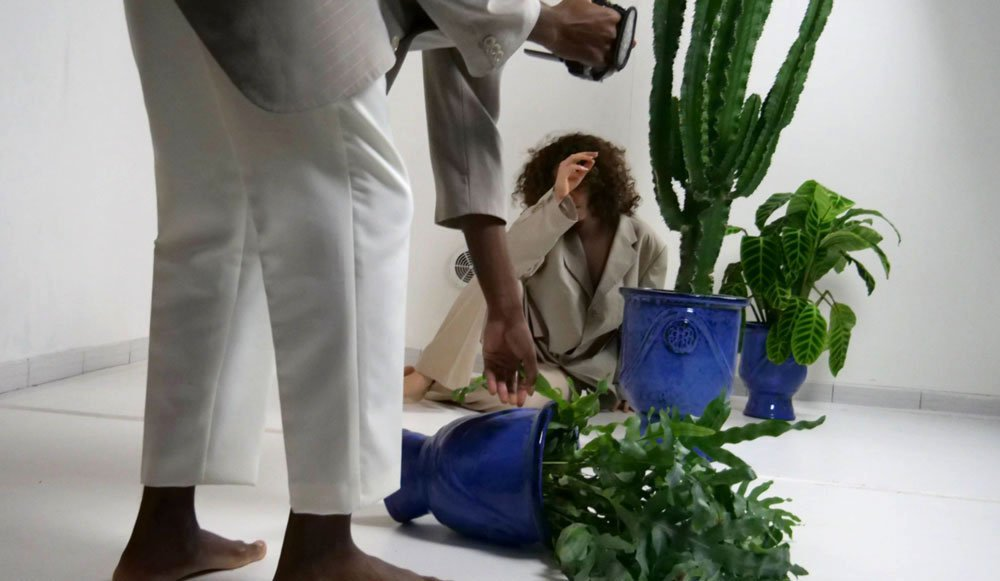
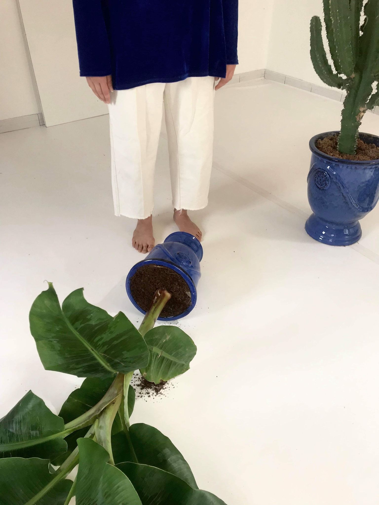
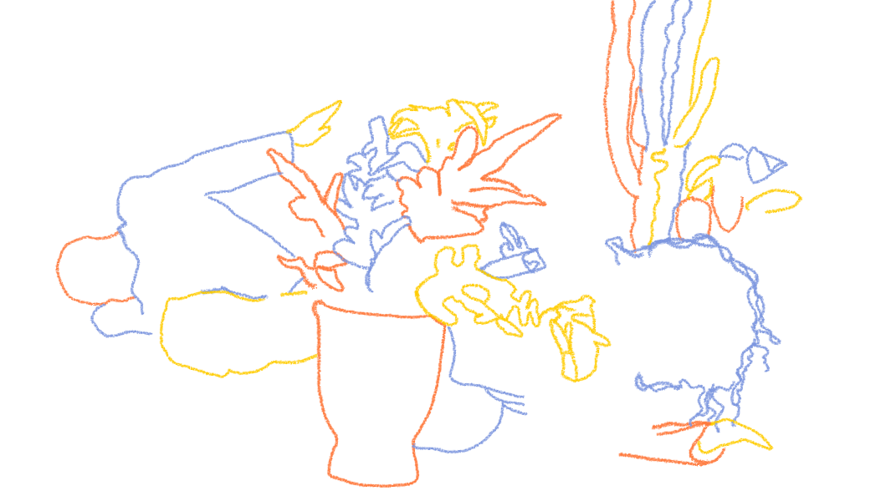
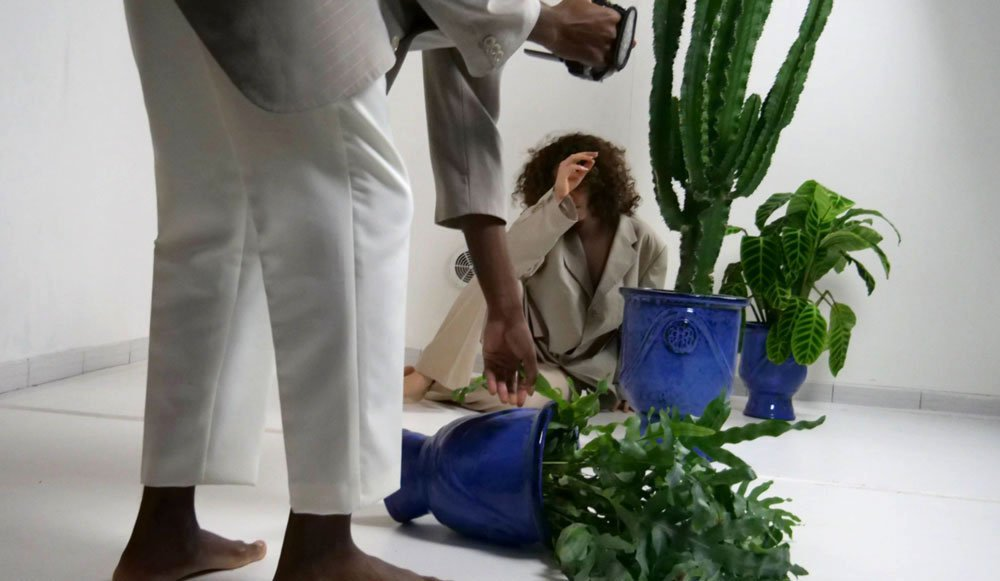
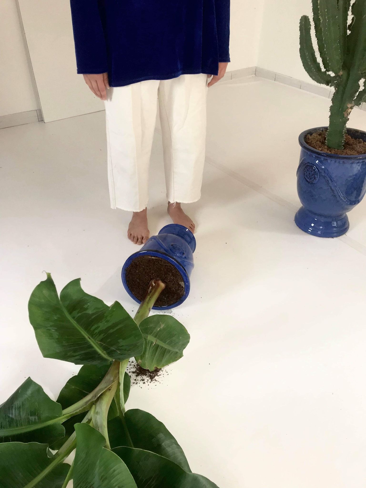
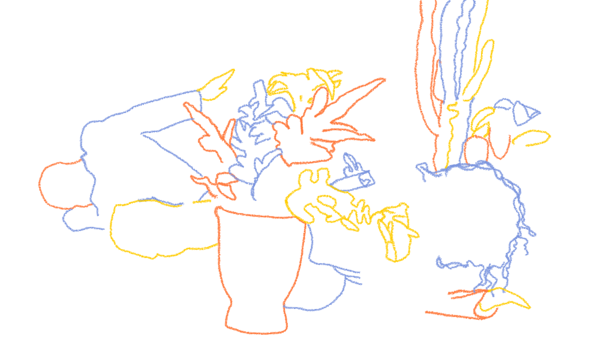
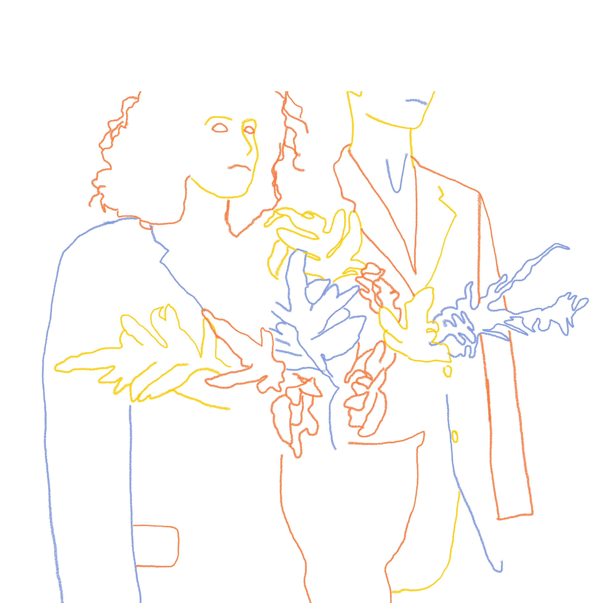
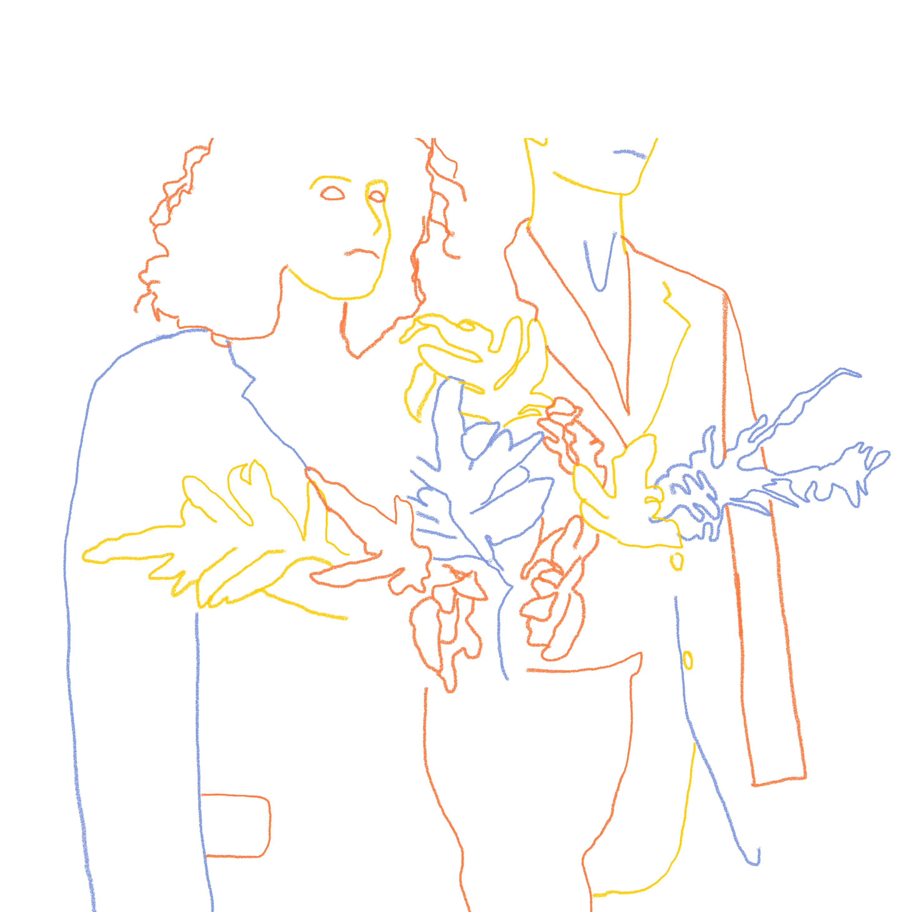

Plouf. La plus rigolote, et la moins « chargée » de sens, mais aussi la plus esthétique. Des espaces comme des aérogares futuristes, absolument blancs, et partout de petits personnages qui font penser – mais oui ! – à la pub Kodak de Mondino, et là encore à des wagons de films de SF, à commencer par 2001, l’odyssée de l’espace, à Oblivion, semi-nanar à l’esthétique parfaite et immaculée avec Tom Cruise, à Bienvenue à Gataca, au Meilleur des mondes, à Wall-E.... Des piscines sans eau, des plongeoirs au ras du plafond, des cohortes de baigneurs suspendus sur des rails, c’est un régal de se perdre dans l’examen minutieux de ces photos et de découvrir les surprises qu’y sèment la photographe, dans un gigantesque «Let’s find Momo».
« Je suis toujours menée par l’idiotie, le non sens, les grosses machineries où l’homme est face à un système qu’il a créé et qu’il subit. Les décors changent mais il y a toujours une aberration ».
Isabelle Nivet Avril 2018.
Sorties de secours
 





 
